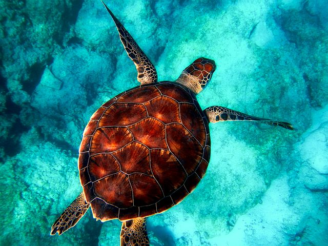

За типом
Існують різні класифікації морів. Класифікація за морським правом, не збігається в цілому з океанографічною класифікацією, деякі синоніми в океанографії набули поширенішого значення в геології та географії.
За ступенем відособлення і режимом розрізняють моря внутрішні, окраїнні та міжострівні та середземні.
В залежності від кількості континентів, чиї береги моря омивають, внутрішні моря діляться на міжконтинентальні (Середземне та Червоне моря) і внутрішньоконтинентальні (Жовте та Чорне моря).
Окраїнні моря характеризуються вільним зв'язком з океаном і, в ряді випадків, відокремлені від них ланцюгом островів або напівостровів. Звичайно окраїнні моря лежать на шельфі, але на характер донних відкладень, кліматичний та гідрологічний режими, органічне життя сильний вплив надає не тільки материк, а й океан. Окраїнним морям притаманні океанські течії, що виникають завдяки океанічним вітрам. До морів такого типу належать: Берингове, Охотське, Японське, Східно-Китайське, Південно-Китайське, Карибське та інші.
З геологічної точки зору в окраїнних морях іноді виділяють граничні моря. Їх означають як такі, що знаходяться на геологічно активних континентальних околицях. Таким чином, до цього класу можна віднести окраїнні моря Тихого океану, які знаходяться на геологічно активних континентальних околицях, але не моря Атлантичного океану, котрі лежать на пасивних околицях. Виділяють два типи граничних морів залежно від напрямку субдукції океанічної кори. Один із типів — моря, що лежать над ділянками, де океанічна кора занурюється під континентальну. Прикладом такого моря є Японське, яке лежить над ділянкою, де океанічна кора занурюється під Євразійську плиту. Інший з типів — моря, що лежать над ділянками, де більш старша океанічна кора занурюється під іншу, більш молоду океанічну кору. Прикладом такого моря може бути Південно-Китайське, під яким океанічна кора занурюється в бік Тихого океану.
Міжострівні моря оточені більш-менш щільним кільцем островів, пороги між якими перешкоджають вільному водообміну цих морів з відкритою частиною океану. Більшість міжострівних морів розташовані серед островів Малайського архіпелагу. Найбільші з них: Яванське, Банда, Сулавесі. В геоструктурному відношенні належать головним чином до сучасних геосинклінальних областей.
Існує також класифікація морів в залежності від температури їх поверхневих вод, але вона практично не використовується. В даному випадку ми говоримо про тропічні, помірні або полярні моря.
За ступенем солоності розрізняють концентраційні та розбавляючі моря. Концентраційні мають більшу, ніж у зовнішньому океані, солоність води завдяки значному випаровуванню та відсутності притоку прісних річкових вод (посушливі та пустельні регіони, в яких випаровування значно переважає над кількістю атмосферних опадів). Водообмін з океаном або сусіднім морем через протоку полягає у витіканні солонішої морської води з придонними шарами та надходженні менш солоної води з поверхневими шарами. Приклад такого моря — Червоне море.
Розбавляючі моря — ті, що мають меншу, ніж навколишній океан солоність завдяки тому, що притік прісної води зі стоком річок та опадами переважають над випаровуванням. В цьому разі водообмін з океаном або сусіднім морем через протоку полягає у витіканні менш солоної морської води з поверхневими шарами, та надходженні солонішої води з придонними шарами. Приклад такого моря — Чорне море.